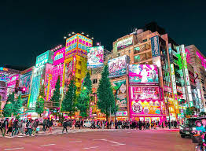

Top Tourist Places in Tokyo

Tokyo Tower
A symbol of Tokyo resembling the Eiffel Tower, offering observation decks with panoramic city views.

Sensō-ji Temple
Tokyo's oldest temple located in Asakusa, known for its vibrant gates and traditional shopping streets.

Shibuya Crossing
One of the busiest pedestrian crossings in the world, located in Tokyo's trendy Shibuya district.

Meiji Shrine
A peaceful Shinto shrine surrounded by a forest, dedicated to Emperor Meiji and Empress Shoken.

Tokyo Skytree
The tallest tower in Japan with two observation decks and a large shopping complex at its base.

Akihabara
A vibrant district known for electronics, anime, manga, and otaku culture — a paradise for tech lovers.